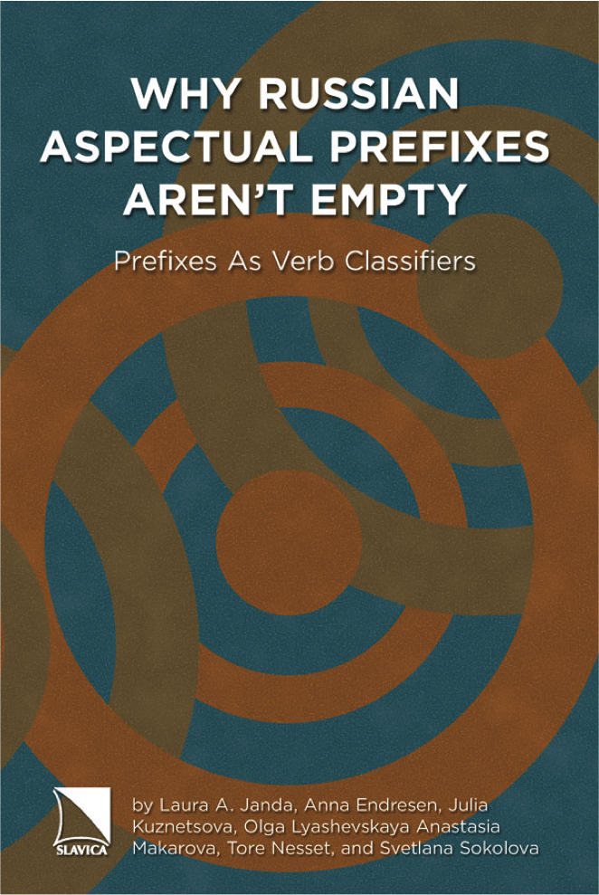

Laura Janda’s Home Page |
 |
Email: laura.janda"at"uit.no |
|
Address: HSL fakultet, Universitetet i Tromsø, N-9037, Tromsø, Norway |
Laura Janda’s Home Page |
|
Email: laura.janda"at"uit.no |
|
Address: HSL fakultet, Universitetet i Tromsø, N-9037, Tromsø, Norway |
Why Russian aspectual prefixes aren’t empty: prefixes as verb classifiers. Laura A. Janda, Anna Endresen, Julia Kuznetsova, Olga Lyashevskaya, Anastasia Makarova, Tore Nesset, Svetlana Sokolova. Bloomington, IN: Slavica Publishers. 2013. 227pp. Find out more about this book HERE and link to the data here. Buy a copy from Slavica Publishers at this link. |
 | Cognitive Linguistics: The Quantitative Turn. The Essential Reader Laura A. Janda (ed.). 2013. De Gruyter Mouton. 321 pp. Buy a copy from De Gruyter Mouton at this link. |
 |
Laura Janda's conference presentations
Laura Janda’s Teaching Portfolio: Partnering with Students in the Pursuit of Knowledge
CLEAR Research group (CLEAR = Cognitive Linguistics: Empirical Approaches to Russian)
THREAT-DEFUSER project on Hybrid warfare and a plan to safeguard societies, financed by a grant from the Norwegian Research Council
TWIRLL: Targeting Wordforms in Russian Language Learning, a project financed by a grant from the Direktoratet for internasjonalisering og kvalitetsutvikling av høyere utdanning. See also this site touting TWIRLL as an exemplary project.
Min russiske reise MOOC (FEIDE login required)
SMARTool (Strategic Mastery in Acquiring Rich morphology Tool) for English-speaking learners of Russian; see also our instructional video
SMARTool Treasure Hunt Story Time
SMARTool (Strategic Mastery in Acquiring Rich morphology Tool) for Min russiske reise
Tromsø-forskere lanserte nytt gratis verktøy for å lære språk, article about launch of SMARTool for Russian in iTromsø newspaper, published 13.02.2020
Nå blir det lettere å lære et nytt språk, article about the launch of the SMARTool for Russian in the UiT news, published 14.02.2020
Digital løsning gjør det lettere å lære språk, article about the SMARTool published by NRK Sápmi 21.02.2020
Nå blir det mye lettere å lære et nytt språk, this article appears on the front page of the Norwegian research news website 26.02.2020
Russian Constructicon; see also our YouTube Channel
NFR Project: Neat theories, messy realities
Slavic Cognitive Linguistics in Tromsø research group, "Exploring Emptiness" project, Tromsø cognitive linguistics reading group, Kognitivt sommarseminar i Tromsø, Den russiske filmserien ved UiT, MA classes at UiT, Novemberseminaret i russisk 2016, Cognitive and Corpus Linguistics (HIF 3030), Contemporary Cognitive Linguistics (HIF-8029), Conference “Time and Variation in Cognitive Linguistics”, Cognitive Linguistics in the Triangle conference February 22, 2103
Empirical Linguistics at UiT: Summer 2014
Data and statistical models for articles in Time and Space in Russian Temporal Expressions, a special issue of Russian Linguistics, forthcoming in 2013
Data and R scripts for Rival Forms
Data and R scripts for Possible Words
Data and R scripts for Njealji davvisámi adposišuvnna geavahus (The use of four North Saami Adpositions)
Data and R scripts for Grammatical Profiles and Aspect in Old Church Slavonic
Data and R scripts for byti in Old Church Slavonic
Slavic Cognitive Linguistics Bibliography (2009 version), by Ljiljana Saric
Laura Janda's UNC page (NOTE: This site is not being updated anymore)
Cluster Types for Russian Verbs
Case Book for Russian and Case Book for Czech Interactive Exercises
Quick link to CRIStin